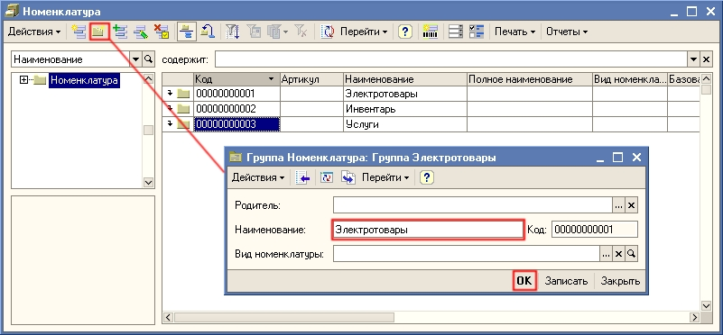
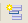
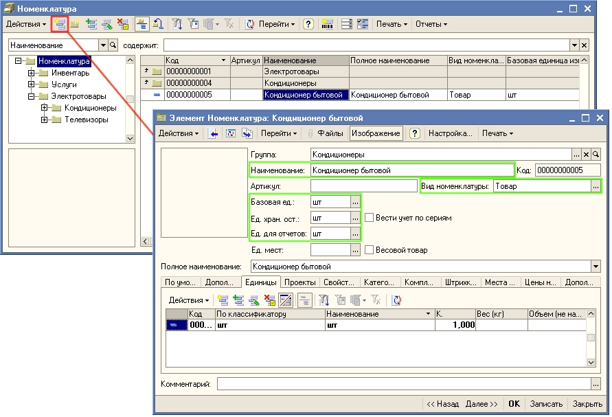
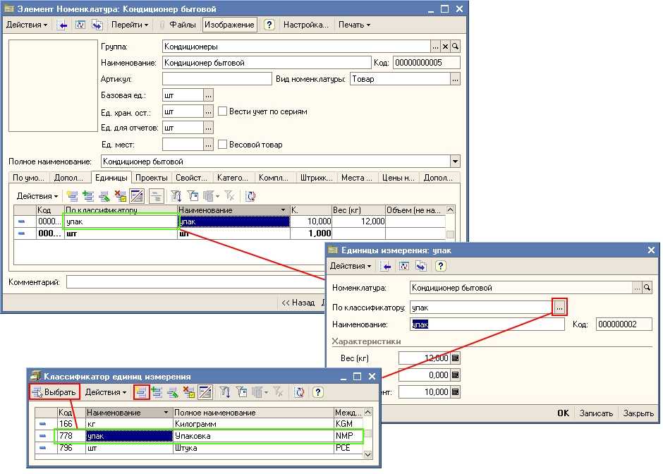
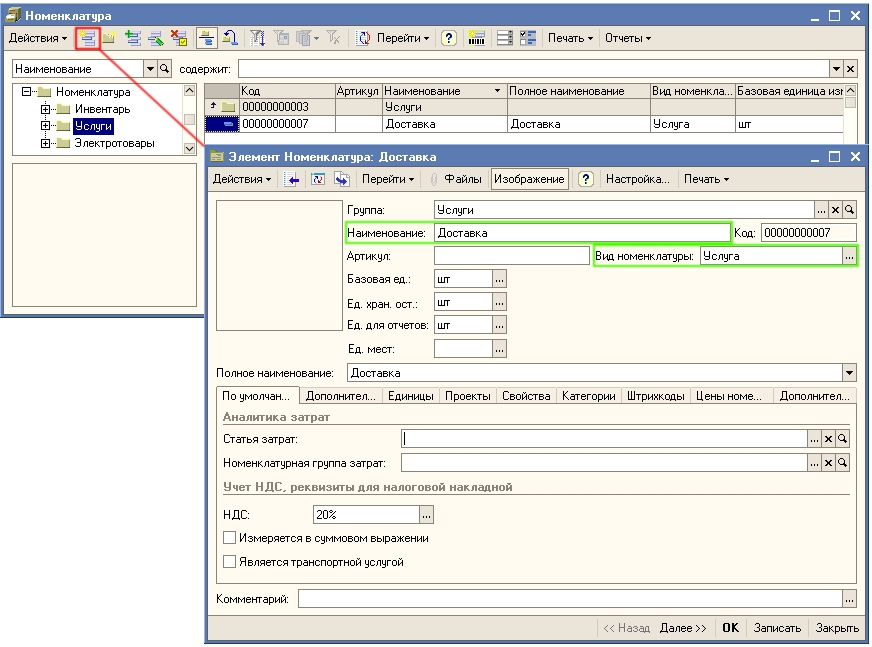

1. Откройте список номенклатуры (товаров и услуг) торгового предприятия.
Для этого в меню Справочники выберите пункт Номенклатура.
| ПРИМЕЧАНИЕ Номенклатура (применительно к программе «Управление торговлей для Украины») — это перечень номенклатурных позиций, который включает в себя товары, услуги. Также предусмотрена возможность хранения наборов товаров. Наборы товаров могут быть использованы для оформления быстрой продажи товаров без предварительной сборки (набор-комплект) и для быстрого заполнения табличной части документа (набор-пакет). |
Для классификации товаров в справочнике "Номенклатуры" создаются группы и подгруппы товаров.
Структура групп должна быть создана таким образом, чтобы в дальнейшем использовать эту группировку для быстрого поиска товаров в процессе оформления документов и для анализа данных в различных отчетах.
Новые группы и новые элементы в справочнике Номенклатура создаются так же, как в справочнике Контрагенты (см. раздел «Заполнение сведений о деловых партнерах »).
2. Введите в справочник Номенклатура группы товаров Электротовары, Инвентарь и Услуги. Для добавления новой группы нажмите кнопку (или выберите пункт меню Действия -Новая группа, или нажмите сочетание клавиш CTRL+F9).

3. Для группы товаров Электротовары создайте две подгруппы: Кондиционеры и Телевизоры. Для этого установите курсор на группу Электротовары и нажмите на стрелку рядом с папкой группы . Добавьте новую подгруппу, нажав на кнопку (или выберите пункт меню Действия -Новая группа или нажмите сочетание клавиш CTRL+F9).
4. Введите в группу Кондиционеры товар Кондиционер бытовой, в группу Телевизоры товар Телевизор Рекорд. В группу Инвентарь введите товары Вилы, Грабли, Лопата. Для ввода товаров используйте кнопку

, так как это показано на рисунке:
Для записи информации о товаре нажмите на кнопку Записать или ОК. При этом будут автоматически созданы единицы измерения остатков и единицы для отчетов, равные базовой единице.
|
Примечание. Для того, чтобы при вводе новой позиции номенклатуры автоматически заполнялись базовая единица и вид номенклатуры подставлялась автоматически в карточку товара, необходимо в настройках пользователя (Сервис- Настройки пользователя) в группе настроек Основные значения для подстановки в документы и справочники установить их в качестве значений по умолчанию. Вид номенклатуры (товар, услуга) выбирается из одноименного справочника. Предварительно в этот справочник должны быть введены записи о видах номенклатуры с типами товар и услуга. |
|
Совет. Дополнительная информация о позиции номенклатуры вводится на различных закладках. С помощью кнопки Настройка можно настроить видимость закладок и расположенных на них полей (реквизитов). Также можно настроить обязательность заполнения тех или иных реквизитов справочника Номенклатура. Для каждого пользователя программы можно установить свои настройки и сохранить их. |
Если товар отгружается или поступает в упаковках, то нужно задать еще одну единицу измерения (упаковку). Предварительно информация о новой единице измерения (упаковке) вводится в справочник Классификатор единиц измерения. Для новой упаковки надо задать Коэффициент - количество штук в упаковке. Также можно задать вес и объем упаковки. Для добавления новой упаковки используйте кнопку на закладке Единицы, так как это показано на рисунке:

5. Введите в группу Услуги информацию об услуге Доставка, так как это показано на рисунке:

Только что Вы научились заполнять сведения о товарах и услугах, приобретаемых и реализуемых организацией.
Из следующего раздела Вы узнаете, как ввести цены на товары и услуги.